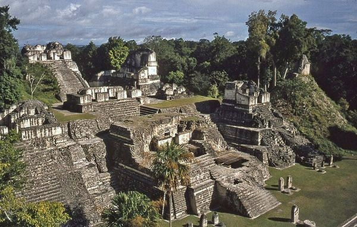
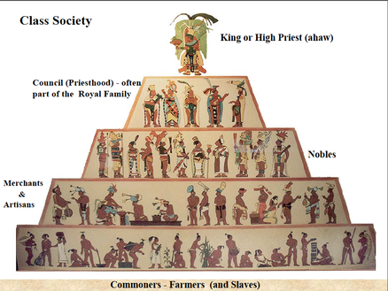
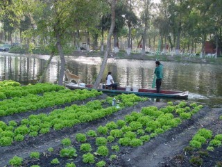

History

The Ancient Mayan Civilisation, is one that has intrigued the world for hundreds of years. It sudden rise to greatness and then mysterious disappearance are what make the Mayan Civilisation one that is quite remarkable. From what we know they were great thinkers, very talented artists and were very innovative. Their beginning predates to 1800 BC, which means their civlisation had lasted for nearly 3000 years when they were depleted in 900 AD. They were one of the powerful societies in the Mesoamerican area, mainly conforming to the area of what we now know to be Guatemala. The Mayans were also renound for their giant stone temples, some of which are still standing today like the one in their capital city of Chichen Itza. Overall the Mayan Civilisation was one that was ahead of its time and one that thrived longer than many cities or nations currently have. It was truly a remarkable city whose contributions to society should not be taken for granted.
Government

Above is a photo of the Chilam Balam, much of what we know about the Government systems of the Mayans is derived from this book.
The Ancient Mayans government system was a Hierarchical system.
Each city state was to be ruled by one king, and around him were his councils who were chosen from a range of noble families.
The king was considered to be chosen by the gods and was considered to be the mediator between the gods and the people that lived in the civilisation.
The priests were also considered to be as powerful as kings.
The kings even came to the priests for advice on how to deal with a crisis, hence the priests had great control over how a city state was ruled.
The king was called the “ahaw”, the military leaders were known as the “nacom” and the king’s council were known as the “batab”.
At the peak of the Mayan Civilisation there was 100s of city states, each with its own king.
The king was expected to serve as a military and give blood sacrifices to the gods, once a king died his child would take over no matter what the age of the child was.
The king’s main responsibility however, was to ensure the continual growth and expansion of his city state. Below is a photo of a painting of an Ancient Mayan King.

Religion

Above is a photo of a bust of an Ancient Maya Sun God Kinich Ahau
Religion was very pivotal to the Mayan Civilisations, just like all the other major ancient civilisations, in fact the beliefs of the Mayans were very similar to that of the Aztecs and Incas.
The Ancient Mayans were polytheists and each God was of great prestige to them. In Maya mythology, Chac (sometimes spelled “Chaac”) was the god of rain and thunder, and important as a fertility and agriculture god.
To the Mayans he was one of the most valuable Gods, as they believed without him they would have no crops would not be fertile.
Other important Gods in the Mayan Civilisation were the God of Sun (Kinich Ahau), The Maize god ( Yumil Kaxob) is representative of the ripe grain which was the base of the Mayan agriculture.
These were the main Gods in Mayan societies. The Mayan people built large temples and buildings in honour of these Gods and here they offered human sacrifice as the ritual offering of nourishment to the Gods, as they believed that blood was a source of nourishment to them. Below is an example of a a temple built in honour of the warriors of the tribe. On the outside, the carving of Chaac is clearly visible.

Arts

Art was very important to the mayan civilisation. Their artwork is what shaped and defined their religions, but more importantly most of their artwork was of their kings who they wanted to be remembered all throughout history. Above is an artowork called Maya Stella, it is a piece of artwork that contained writing and carving, generally it was made in honour of the new king and was located near the altar of their place of worship. It is one of their more traditional pieces, that reflects one of their main styles of artwork. Sculpting. Scultping was probably one of their main styles of artwork due to the fact that they had stone and materials like stone in abundance around them. Below is a Chama Style Painting. These paintings were often found along the walls of maya buildings, such as houses temples and other buildings that were used for the public. These paintings portayed the daily life of the maya civilisation, or the famous battles in various myths that the mayan people subscribed to. Not many of these painting remain today because of the buildings being destoryed by erosion or decay over the thousands of years.

Innovation

Some innovations by the Mayans were for example, the discovery of the number 0. The Mayans had come up with the number 0, thousands of years before Europeans did. They also developed accurate calendars that consisted of 365 day years. Their astronomers tracked the cycle of the sun and moon correctly, thousands of years before any other civilisation had done so. BY 700 BC they had developed a handwriting system, only 4 other ancient civilisations had done this at that time. From then onwards they continued to develop their wiring and then went on to write tens of thousands of books. They invented chocolate, herbal medicine and even a game that was similar to basketball. They had built hundreds of cities and by 600 BC the Mayan Capital City, Tikal had Schools, Libraries, Hospitals and Huge Sport Arenas. Below is as previously mentioned the Ancient Mayan Calendar an advancement that was many centuries ahead of its time.

Society

Above is an example of the Class system pyramid of the Ancient Mayan Civilisation.
Mayan Society was broken up into 5 main classes, they were: The King, Nobles, Priests, Common People or Farmers and the lowest rank was
the Slaves. The most powerful position was obviousouly the King, whose power and rights were passed down his heridatry line. He was so
honoured and feared that whenever he was speaking to anyone below his rank a cloth was held before his face. Priests were also held in high
stead due to the fact that they were also able mathematicians, astronomers and scholars. They were quite revered and they were responible
for handling the human sacrificial offerings to the God. Priests took advantage of the beliefs of the people and could manipulate who was
sacrificed to the Gods. At the bottom of society are the Common People and Slaves. The Common People spent most of their lives as farmers or craftspeople. They were the people who worked long hours to help provide stability in the economy of the Mayans. Slaves were either prisoners of war, people who were caught stealing or old slaves children. These people spent their entire lives serving the nobility and were never treated fairly. The only passtime these hard working people got was when they wanted to play a game of Maya Ball Court, a game which required large amounts of skill and was highly dangerous. An Example is shown below.

Economy

Above is an example of Carving in Jade Stone, made by an Ancient Mayan craft maker.
The Economy of the Ancient Mayan Civilisation was not very well recorded, however what we do know is that their main economy was mainly based
on the production and sales of goods. Trade and agriculutre were their biggest source of income. They traded between the different state-cities of the Mayan and other Mesoamerican Civilisations, like the Aztecs and the Incas.
empire, items traded include: Feathers, Salt, Flint, Obsidian, Jade and even Slaves. Craft Builders also aided the economy by making carvings and pictures out of the available resources. Trade of these resources and crafts developed through the two cities of Olmec and Teotichuan, however there was trade markets setup in most of the cities. Furthermore, through the extensive agriculutre of the Mayans, they were also able to sell their crops to the other state-cities, the main crops they grew were maize, beans and chilli peppers. Farming was the stronghold of the economy as 90% of the Mayan populous was involved in Farming, they lived in small huts and grew their crops on their small rasied platforms also know as chinampas. Below is an example of a chinampa.

Environment

The Anicent Mayan Civilisation was based in the low lying rain forests of Southern Mexico, Guatemala and Belize. There was dense forrests as well as giant rivers that were spread across the civilisations. It would have been very hard for them to build any buildings had it not been for their highly innovative ideas. Below is an example of how they used their resources to manipulate their surroundings to fit what they needed. It is a temple, but as you can see the trees all surrounding the temple have been cut down, but the trees around that area were left standing.This is because they were people who only took what they needed and did not waste their resources.

Bibliography
“Ancient Maya Civilization | MESOAMERICAN Research Center”. Marc.ucsb.edu. N.p., 2010. Web. 24 May 2017.
“Civilization.Ca - Mystery Of The Maya - Maya Civilization Timeline”. Historymuseum.ca. N.p., 2010. Web. 19 May 2017.
Mark, Joshua. “Maya Civilization”. Ancient History Encyclopedia. N.p., 2017. Web. 19 May 2017.
“Maya - Facts & Summary - HISTORY.Com”. HISTORY.com. N.p., 2017. Web. 18 May 2017.
“Mayan Civilization”. Aztec-history.com. N.p., 2006. Web. 18 May 2017.
“Mayan Government”. Webpages.uidaho.edu. N.p., 2000. Web. 24 May 2017.
“Mayans Religion: Gods, Animal Spirits And Pyramids”. Great Discoveries in Archaeology. N.p., 2013. Web. 23 May 2017.
Minster, Christopher. “How The Ancient Maya Did Business”. ThoughtCo. N.p., 2016. Web. 21 May 2017.
Science, Live. “The Maya: History, Culture & Religion”. Live Science. N.p., 2017. Web. 19 May 2017.